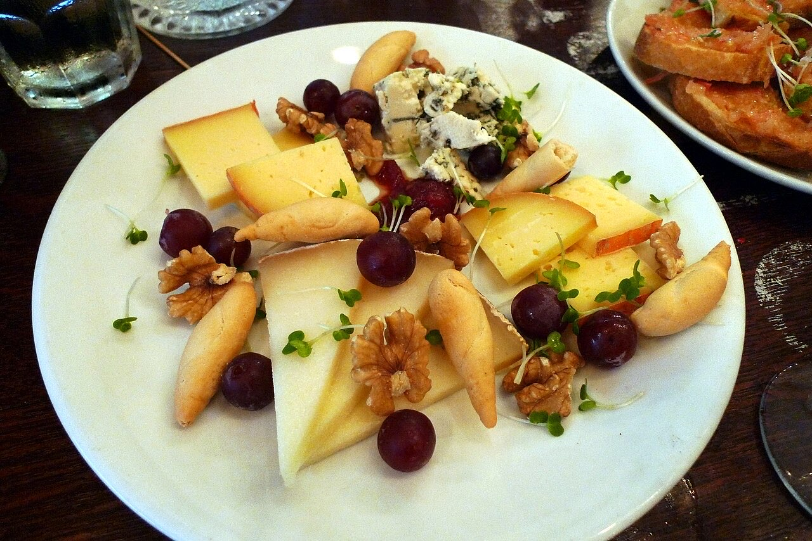

Taberna / restaurante · Centro histórico
Taberna Trovador
Petiscos e vinho no Largo do Trovador
A Taberna Trovador fica no Largo do Trovador, no centro histórico de Guimarães, Património Mundial. Petiscos para partilhar e vinhos de pequenos produtores, com esplanada.
- Esplanada
- Aceita reservas
- petiscos para partilhar
Peça por QR code
Leia o QR na mesa e peça do telemóvel, sem esperar.
Petiscos e vinho
Moelas, bochechas de porco estufadas e vinhos de pequenos produtores.
Esplanada e reservas
Esplanada no largo; reserve por WhatsApp ou telefone.


Fotografias ilustrativas · no site final usamos as vossas.
Pedidos por QR code
O cliente pede da mesa. O pedido chega à cozinha.
- Lê o código da mesaCom a câmara do telemóvel, sem instalar nada.
- Escolhe e pedeVê a ementa com preços, junta pratos e deixa observações.
- A cozinha recebe logoO pedido aparece no ecrã do balcão com o número da mesa.
Aponte a câmara e peça daqui
Pedido de reserva
Reserve a sua mesa
Escolha o dia e a hora. O pedido chega por WhatsApp e confirmamos logo.
Assim chegaria a mensagem ao vosso WhatsApp. Nesta demonstração nada é enviado.
Visitar
Onde estamos
Largo do Trovador 10, 4810-451 GuimarãesHorário
| Seg–Qui | 12:00–15:00 · 19:00–22:00 |
|---|---|
| Sex–Sáb | 12:00–15:00 · 19:00–22:30 |
| Dom | Encerrado |
Proposta para Taberna Trovador
Gostou? Isto pode ser o vosso site.
Esta página foi feita de propósito para Taberna Trovador por João Machado, programador web aqui de Guimarães. Inclui:
- Página rápida no telemóvel, com o vosso nome e identidade
- Ementa digital com QR code e pedidos feitos da mesa
- Ementa e preços fáceis de atualizar
- Botões para ligar, WhatsApp e direções
- Pedidos de reserva ou encomenda direto para o WhatsApp
- Domínio próprio (ex.: tabernatrovador.pt) ligado ao Google Maps
Eu trato do alojamento e da manutenção. Sem compromisso.